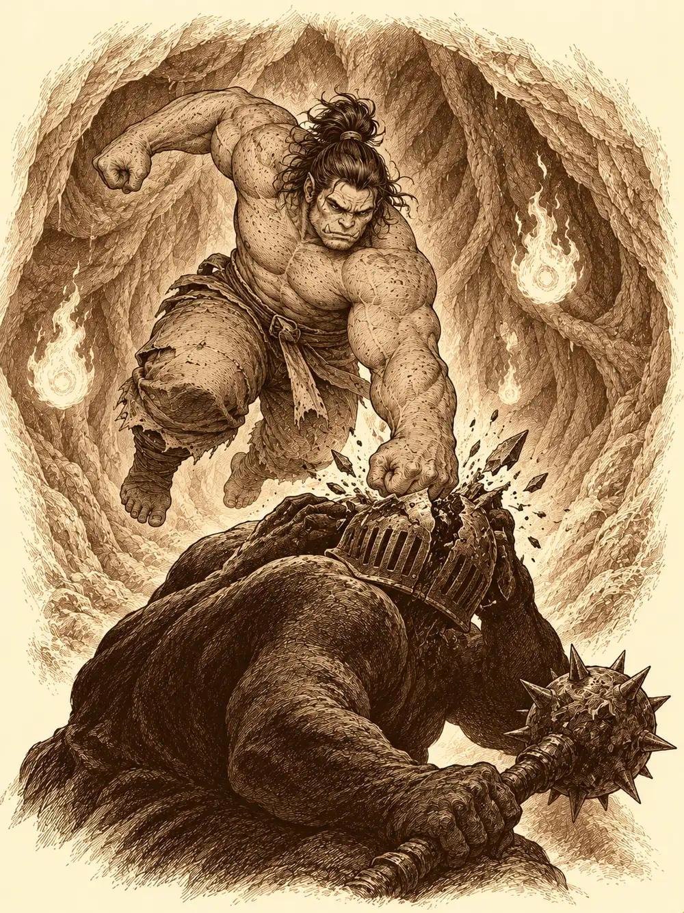

Capítulo 104
En el vientre de la bestia
Libro VII · La Reina Cuervo
Aquella semana las cosas se rompían solas. A Sun Gukon se le partieron los brazaletes de escamas verdes que no se ponía desde hacía siglos. El hacha de su padre, que Gur había dejado en la base para no estropearla, apareció mellada de punta a punta. La lanza de Caniza había perdido el filo de tanto llevarla de un lado a otro, y la daga de Calista, de entrar y salir del agua, se había llenado de una herrumbre que parecía mordida. Nadie tenía tiempo de cuidar el acero. La guerra se llevaba las manos, el hierro y las ganas.
Sun se había instalado en Ukio. Le habían llegado rumores de que algunos cazadores no veían con buenos ojos lo que había hecho con la bendición, y había preferido quitarse de en medio antes de que alguien quisiera explicárselo a golpes. Allí echaba una mano a los vecinos, cuidaba de los animales de la base y del bebé, y seguía practicando con Lea el arte de cambiar de forma, sin grandes progresos. Calista, en cambio, no había parado: papeles para Rua, conversaciones con nobles, horas en la biblioteca. Entre una cosa y otra había escrito a los cazadores con nociones de alquimia, Maroxi entre ellos, para contarles lo que sabía de las hierbas encontradas en las cocinas de palacio. Calmaban, eso era seguro, y en dosis altas podían resultar tóxicas. La cantidad no era grande. Lo raro era que estuvieran allí.
Gur venía de los pueblos del Sur con las botas llenas de barro. Había decidido que llevaba demasiado tiempo pegando por pegar, y se había dedicado a llevar comida, cortar troncos, arreglar tejados y levantar vallas donde más falta hacían. Le acompañaba su sensei, el pequeño Kuma, que llevaba unos días raro, medio encogido sobre su hombro, vomitando cosas que humeaban. Caniza, por su parte, había restaurado una ermita diminuta porque no le daba para un templo; allí rezaba, preparaba piras y celebraba los ritos de los muertos, y algunos vecinos empezaban a subir a pedirle consejo, sorprendidos de que un monje con una cesta en la cabeza resultara tan persuasivo.
En eso estaban cuando llegó un emisario de palacio con una carta. Calista la abrió, la cerró, cruzó la sala sin mirar a Danifae y se plantó delante de Sun, que estaba leyendo en un rincón.
"Reclaman tu presencia", dijo. "De inmediato".
El mono cerró el libro. Los nervios se le notaban en la cola, que se le había quedado tiesa.
"Por fin. Lo estaba esperando". Tragó saliva. "No pasa nada. Estamos preparados".
Danifae se ofreció a acompañarlo, solo para escuchar. Sun la miró buscando algo detrás de la sonrisa y no encontró más de lo que encontraba siempre. A Caniza, que apenas lo conocía, le explicó lo que había hecho sin adornarlo: en un acto egoísta había renunciado a la bendición de una bestia divina para quedarse con el bastón del anterior Rey Mono, y ni al shogunato ni a los cazadores les había gustado.
"Ya no soy el mono engreído que era", dijo. "Intento ser lo que el monje Tang me pidió".
La salida se retrasó por otra pelea, como casi todas las salidas de aquella casa.
Gur había descubierto que no conocía al recién llegado y quiso saber si le apetecía pegarse. Caniza contestó que más tarde, que ahora había que acompañar a un compañero. Gur insistió. Calista, por encima de todo aquello, mencionó con malicia que alguien podía hacer una demostración de fuerza junto al palacio para entretener al shogun enfermo, y aquello fue la chispa. Gur se levantó, le dio una palmada en la cesta y anunció que era su día de suerte. Caniza le pidió primero que esperara, después que se callara, y Gur le descargó el mandoble antes de que nadie hubiera dicho que el combate empezaba.
Calista dio un respingo en la silla y las aletas se le pusieron de punta, rectas hacia el techo como lanzas. Sun se tapó la cara con una mano.
Shizuka se plantó en la puerta. La niña llevaba de la mano a Danifae y no estaba para tonterías.
"Sentaos".
La voz que salió de ella no era la de una cría. Sonó a ultratumba, y Gur cayó de culo en la silla sin pensarlo. Caniza notó la orden resbalarle por encima sin agarrar, y la niña lo miró con una ira muy poco infantil.
"Señora jefa", dijo él, inclinándose a su altura, "¿en su casa se permite que la gente ataque a muerte a otra gente? Quiero presentar una queja".
"Es Gur. Si tú lo has retado, pues te pega".
Caniza se sentó y exigió, como precio de su calma, que cada uno de los presentes dijera en voz alta que había visto a una persona recibir un mandoble sin hacer nada. Shizuka le respondió que la culpa era suya por haber hablado. Sun le aseguró que Gur era buena persona a su manera. Caniza contestó que no tenía ningún interés en entenderlo.
Al final salieron a la calle a zanjarlo, porque nadie quería llevar aquella disputa al palacio. Calista miró de reojo a Danifae cuando la drow se le puso al lado. Caniza se impuso las manos y se curó antes de empezar, y después golpeó dos veces con una luz que no era del todo suya, una luz de dioses, y las dos veces alcanzó. Gur respondió con cuatro tajos que le arrancaron más sangre de la que el monje quería admitir. Entonces Caniza dio un paso atrás, apoyó la contera de la lanza en el suelo y alzó la voz.
"Me rindo. Ya he visto quién es el mejor guerrero".
"¿Cómo que te rindes?", gritó Sun. "Aquí nada se acaba hasta que uno cae. ¡Tírate al suelo! ¡Hazte el muerto!".
Caniza se dio la vuelta para marcharse. Gur fue detrás de él, sonriendo, y le abrió la espalda de un tajo.
"Tanta chulería para nada", dijo el semiorco, decepcionado, cuando vio que el otro no respondía.
Sun le tendió la mano a Caniza para levantarlo. Le recordó que le había dicho que se hiciera el muerto, como con los osos. Alguien añadió que Gur era un semiorco y no entendía lo de rendirse.
"Un semiorco entiende perfectamente la idea de atacar a alguien por la espalda", dijo Caniza, con la voz rota. "Creo que me ha atravesado un pulmón. No estoy para quejarme mucho". Se curó otra vez, despacio. "Voy a ser sincero. Ahora mismo tengo cero confianza en todo este grupo".
Más que el tajo, le dolía la normalidad con que los demás le explicaban por qué había ocurrido.
Dentro, Shizuka le dio unos golpecitos en la cabeza a Danifae.
"Cuéntaselo. Seguro que te ayudan. A mí me rescataron".
La drow desenvainó sus dos espadas cortas y las dejó caer al suelo delante de ellos. Después hincó una rodilla y agachó la cabeza.
"Creo que os debo una disculpa a todos". Levantó los ojos, del color del ámbar. "He estado irascible estos días. He hecho algo que no debería haber hecho. Incluso ataqué a una cría". Miró a Gur. "Se tragó una de mis esferas".
Gur se acordó de que ella le había pedido una. Su sensei la había cogido porque quemaba, y desde entonces no había vuelto a estar bien.
Calista sonrió sin que la sonrisa le llegara a los ojos.
"Las disculpas están bien, pero también se demuestran con acciones. Espero con ansias ver tu arrepentimiento".
"Eso es lo que pretendo".
Danifae se desabrochó la armadura ligera y se levantó la camisa. Bajo el pecho tenía una marca con forma de araña muerta, las patas encogidas hacia arriba, grabada en la piel como si la hubieran cosido sin hilo. Sun desvió la mirada. Calista se inclinó para verla mejor.
"Es una marca de Lolth", dijo Danifae. "Cuando reúna las cuatro esferas, puedo intentar un ritual para quitármela. Para ser libre del látigo de mi diosa".
Caniza reconoció la marca. Sabía lo que era. No podía saber si un ritual con esferas haría lo que ella prometía, ni siquiera si haría algo: era la marca de una diosa, y una diosa hace con sus marcas lo que le apetece. Calista dijo que se tomaría un tiempo para decidir si colaboraba. Gur, en cambio, se volvió hacia la cesta de Caniza.
"Mira, mira, cabeza cubo. Esto es respeto".
Danifae añadió que había tenido una idea para ayudar al maestro de Gur a expulsar la esfera que lo enfermaba, y que de paso, sí, quería recuperarla. Cuando se levantaron para ir a palacio, recogió sus espadas y preguntó si podía acompañarlos. Calista la miró de arriba abajo y dijo que quién era ella para decir que no. Por el camino la drow les contó que las esferas las habían encontrado los cazadores en los templos de los guardianes de Kuroto, y que por eso había venido a la isla.
Los soldados les hicieron reverencias en la entrada y a Gur ya ni lo miraron, porque siempre hacía lo mismo: se sentaba en la alfombra en cuanto lo dejaban pasar. Rua lo saludó con la mano desde su asiento, con una sonrisa cansada. Calista se inclinó hasta casi rozar el suelo. Sun hincó las dos rodillas y apoyó las palmas y la frente en la madera.
"Levántate, Sun. Acércate".
Él se levantó, volvió a inclinarse y se quedó así.
"No sé cómo decirte esto", empezó Rua, "pero algunos cazadores me han informado de que hubo un problema con las bendiciones que el shogunato os pidió reunir".
"Es todo cierto", dijo Sun. "Podría explicarle por qué lo hice, pero le sonará a excusa. Siento muchísimo que mi egoísmo haya puesto en peligro al país".
Volvió a arrodillarse. Rua le pidió que se levantara. Le pidió que la mirara. Lo miró con pena. Los informes de Aka y Katari se lo habían explicado con detalle: la cúpula estaba rota y los yokai seguían atravesándola, seguramente por la bendición perdida. Le tenía aprecio, le dijo; había sido de los primeros, había firmado el trato con el shogun, que seguía enfermo.
Rua se levantó y los guardias se tensaron. Se puso delante del mono y le quitó del cuello el collar de cazador. Se lo entregó a uno de los soldados.
"Desde este momento ya no eres miembro de los cazadores. Hasta que resuelvas el problema de la bendición, tienes prohibido el acceso a todos sus lugares".
Cerró los ojos. Se le veía lo que le había costado. Volvió a sentarse muy recta, y entonces se le dibujó una sonrisa pequeña.
"Arregla esto, Sun, y serás bienvenido como siempre".
A Sun le cayeron dos lágrimas gordas que no se molestó en secar. Hizo otra reverencia, pidió permiso y se retiró arrastrando la cola y el bastón. Al pasar junto a Danifae, la drow le puso una mano en el hombro. Él le devolvió un gesto con la cabeza.

Fuera, Gur no entendía tanto drama. Había visto muchas veces a los cazadores ir a hablar con dioses y seres invisibles para pedirles cosas. ¿Por qué no iban a ver a ese guardián y le pedían otra vez la bendición?
"Ojalá fuera tan sencillo", dijo Sun.
Kuma se dobló sobre el hombro de su discípulo, se apartó de un salto y vomitó. Lo que le salió de la boca era lava, roca fundida que abrió un agujero humeante en el suelo. Se limpió los morros.
"Me duele un poco la barriga desde hace unos días, pero aguantaré".
Volvió a vomitar. Otro agujero. Caniza le impuso las manos y probó a sanarlo con una plegaria, y la plegaria no hizo nada. Danifae se acercó a Gur y le habló en voz baja. Aquello lo causaba la esfera de fuego que se había tragado, y ella había comprado un pergamino para agrandar a una criatura. El maestro de Gur crecía con cada golpe que recibía; si lo hacían muy grande, podían meterse dentro y sacarla.
Calista dijo que era una locura y que lo harían igualmente. Gur se echó a reír. Kuma miró el castillo del shogun con preocupación y pidió que se alejaran, que no quería romper cosas como las otras veces.
Salieron de Sho por la puerta principal y bajaron hasta un claro apartado. Gur cerró los puños y empezó. Cada puñetazo hacía crecer al pequeño yokai rojo, y al principio el semiorco le pegaba en la cabeza y al final tenía que pegarle en el dedo meñique del pie. Danifae le ofreció el pergamino a Sun, y fue el mono quien lo leyó y quien se encargó de sostener aquella magia mientras durase. Kuma se hizo tan inmenso que podía haberlos cogido a los cinco con una mano.
"Uh. Soy más grande".
"Eso es trampa", protestó Gur, "el que tiene que aprender a hacerse grande soy yo".
El demonio se arrodilló, apoyó las manos en el suelo y abrió la boca como una cueva. Ataron una cuerda a uno de los colmillos y bajaron.
El hedor era insoportable. Hacía calor, un calor espeso de horno cerrado, y al llegar a lo que debía de ser el cuello los pies se hundieron en un líquido que les cubría los tobillos y se estiraba como cola al levantar la bota. Flotaban cosas en él. Alguien sacó del caldo una cabeza y Gur la reconoció: era de unos bichos negros con plumas que habían venido volando a molestarlos. Más allá, el pollo del desayuno. Calista tenía arcadas, pegada a la pared, sin querer tocar nada, y se le estaban secando las escamas. Gur metió el brazo hasta el codo y sacó un juego de dados.
"Así que por eso me ganaba siempre".
En las paredes se abrían unos conductos como flores carnosas que de pronto se contraían y escupían jugos. A Gur le alcanzó uno de lleno. Sun dio dos golpecitos al techo con el bastón y echó a andar por la pared, y Caniza inclinó la cabeza, alzó dos dedos y lo siguió por el mismo camino, pegado a la carne como una mosca.
"Os odio tanto ahora mismo", dijo Calista.
Llegaron al estómago. En las paredes ardían dos llamas que flotaban sin tocar nada y, al fondo, de espaldas, había una criatura enorme acurrucada, de rodillas, con las manos sobre la cabeza. No sabían si era hostil. Danifae estaba diciendo que quizá aquellas llamas tuvieran que ver con la esfera cuando a Gur se le escapó una bola de fuego del anillo. Nunca había sabido apuntar aquella cosa. El fuego reventó contra la espalda de la criatura, que se levantó despacio; las llamas de las paredes giraron a su alrededor y se le metieron en la boca. Se dio la vuelta riéndose, con un lucero del alba en la mano.
"¿Quién sois vosotros? Si estáis aquí, seréis mi comida".
Golpeó el suelo con el mazo y las dos llamas crecieron hasta convertirse en dos elementales de fuego.
Danifae se movió la primera. Recitó unas palabras en infracomún y la criatura quedó envuelta en una luz de colores que no la dejaba esconderse.
"Machácalo", le dijo a Gur.
Lucharon con el aire ardiendo. Caniza se interpuso ante uno de los elementales y cayó, y fue Danifae quien le arrojó un frasco que lo levantó del suelo con un gemido. Calista curó a Gur una y otra vez y extendió a su alrededor una protección contra la magia; sus intentos de dejar quieta a la criatura no prendieron. Sun, sin soltar el conjuro que mantenía gigante al maestro, sacó copias de sí mismo que distraían a los enemigos, lanzó dardos desde el techo y acabó bajando a pelear. El mazo de la criatura alcanzó a Gur en la cabeza con tanta fuerza que todos creyeron que se había acabado. Se tambaleó hacia atrás. No cayó.
"Te he dicho que a mí no me vas a ganar aquí".
Un instante después saltó con todas las ganas y le partió el casco por la mitad.
"Tú no superas a mi sensei".
La bola de fuego que la criatura llevaba dentro reventó hacia fuera y lo tiró de espaldas, chamuscado e inconsciente. Danifae acabó con el elemental que quedaba. Lo curaron entre todos. Cuando abrió los ojos, Gur señaló a Sun.
"Me engañaste. Pensé que te ibas a llevar mi presa, pero lo distrajiste bien".
Danifae ya estaba hurgando en aquel caldo. Sacó una esfera transparente, de cristal, con fuego vivo dentro, y la guardó sin que le quemara la mano. Calista le dijo que se la había ganado, que sin ella probablemente habrían muerto. Caniza pidió custodiarla él. La drow se la tendió. El fuego le mordió la palma a Caniza; intentó envolverla en un trapo y la tela empezó a arder. No supo explicar por qué a ella no la quemaba. Ninguno lo sabía. Después de discutirlo un poco, Caniza se la devolvió.
El estómago tembló. El líquido empezó a burbujear alrededor de sus tobillos. Calista echó a correr sin decir nada, Sun la siguió por la pared, y Danifae agarró a Caniza de la mano. Gur había visto luz al otro lado y fue en dirección contraria.
Salieron cuatro por la boca. Al rato el demonio se rascó, levantó una pierna con cara de alivio y Gur salió disparado por el otro extremo.
Cuando Sun soltó el conjuro, Kuma volvió a su tamaño de siempre. Se miró la tripa.
"Ah. Ya no me encuentro mal, Gur".
"Tenías un bicho dentro, pero lo he reventado".
"Tú sí que estás reventado". Kuma se tapó la nariz. "Y lleno de mierda. Báñate, que así no nos dejan entrar en la ciudad".
Gur se fue al lago y se tiró desde una roca. Los demás le miraron las quemaduras por encima. Calista se echó agua de su odre sobre las escamas, que se le habían puesto tirantes con el calor, y después se volvió hacia Danifae.
"Tú y yo tenemos una conversación pendiente. Puedo asegurarte que te va a interesar bastante".
Se apartaron juntas. Nadie supo de qué hablaron.
Caniza tenía un brazo achicharrado. Danifae le lanzó una poción desde lejos y el frasco se le estampó contra la cesta. Lo agradeció igual. Se sentó junto a Sun.
"¿Estás seguro de que quieres volver a los cazadores? Después de lo que has visto".
"Se lo debo. Tengo que compensar mis faltas. Y ahí he conocido gente que podría llamar familia. No sería justo que me largara con el rabo entre las piernas porque me han dado dos collejas".
Caniza tardó en contestar.
"Yo también tomo decisiones muy pobres por esa clase de cosas. Si necesitas algo, avisa. Posiblemente no pueda hacer mucho, como dice todo el mundo. Puedo ordenar un cajón".
Volvieron hacia la capital con el pequeño maestro sentado en un hombro ajeno, la esfera en un bolsillo de Danifae y el collar de Sun en manos de un guardia de palacio.
Esa noche, en la base de Sho, Arwen saltó sobre Ikari desde los arbustos del jardín como un cachorro sobre un zapato, y Banzo, que dormía en el césped, se despertó de golpe. Luego llegó Caniza, quemado y dolorido, y les contó la expulsión de Sun y el viaje al vientre del maestro de Gur con Calista y Danifae. Al oír aquel nombre, Arwen echó a correr hacia el bosque. Gur apareció después, recién bañado, y dio su versión del duelo. No coincidía con la de Caniza en cómo había terminado, y discutieron. Aun así, cuando Banzo pidió ayuda para investigar a los sectarios del Sur, Caniza mantuvo su palabra de acompañarlo.
En Ukio, Sun no había dormido. Dejó al bebé kender al cuidado de dos monas ancianas y salió a trabajar para los vecinos, y mientras tanto Banzo llegó por el portal con un pescado para el kamaitachi de la jaula. El goliat lo llamaba Tapón y quería ganarse su confianza para poder sacarlo. Entró en la jaula y la criatura se le echó encima con todas sus cuchillas. Banzo no quería hacerle daño; aguantó los cortes hasta que no pudo más, la estampó contra la pared y salió sangrando.
"No es nada", le dijo al mono cuando este volvió y lo reprendió por el alboroto. "¿Qué te dijo Rua?".
Sun le contó que esperaba un castigo físico y que, en cambio, le habían quitado el collar, y que dolía más por lo que significaba. Banzo lo trató como a un igual y le prometió ayudarlo a recuperarlo. El mono pensaba que Katari y el monje Tang podrían orientarlo, pero no sabía dónde encontrarlos ni podía entrar en los lugares que le habían vetado. Banzo se ofreció a buscarlos él y llevarles su mensaje. Se despidieron agarrándose el antebrazo.
A la mañana siguiente, Gur talaba árboles junto a la base de Sho cuando Arwen lo encontró, y los dos vieron llegar a Gelbreak con Calista en brazos. Estaba inconsciente. Le sangraba el costado.
El drow se encerró con ella en su habitación. Ikari exigió que abriera, y como solo respondía el silencio, le pidió a Gur y a Arwen que echaran la puerta abajo. En cuanto entraron, un símbolo se encendió bajo sus pies y los tres cayeron dormidos. Soñaron con hordas y con fiestas. Gelbreak, despierto, siguió atendiendo la herida.
Cuando Ikari abrió los ojos, Calista estaba vendada y ya no sangraba. Gelbreak dijo que la había encontrado entre los arbustos, a treinta o cuarenta minutos de la ciudad por el camino del sudeste. No dijo quién le había hecho aquello. No sabía, o no quiso decirlo. Ikari propuso ir a buscar allí, y de paso recoger hierbas. Arwen se convirtió en osa y, con la ayuda de Caniza, sacó a rastras a Gur, que seguía roncando.
El drow volvió a echar el pestillo para que Calista descansara.